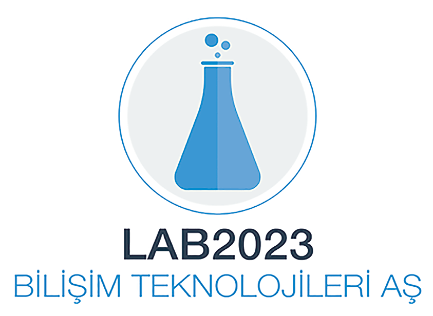
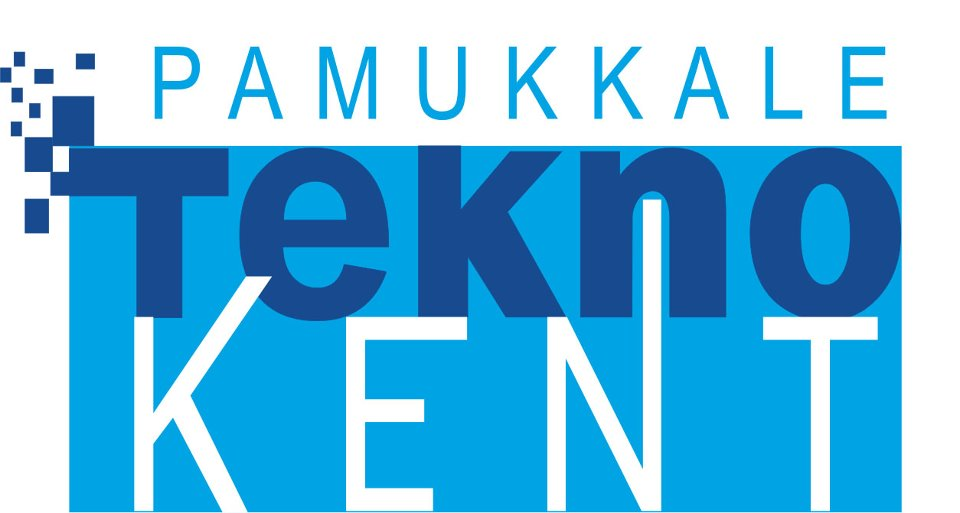
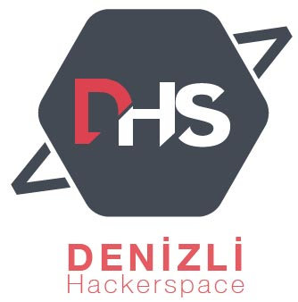

Merhaba Dünya!Rails Girls tekrar Denizli 'de. İki günlük ücretsiz workshop ile Ruby on Rails' in büyülü dünyasına dalmaya hazır mısın?
Twitter' da takip edin. @RailsDenizli
Koçlarımızın yardımıyla, tasarlamayı, modellemeyi ve kodlamayı öğrenin.
Tek ihtiyacınız olan bilgisayarınız, merak ve bir tutam hayal gücü!
Yardım etmek ister misiniz ? Rails koçları ve gönüllüler arıyoruz Bize ulaşın.
| 17:00 |
HoşgeldinizKatılımcılarla tanışma. Ayrıca sizlerle tanışmayı sabırsızlıkla bekliyoruz. |
|---|---|
| 17:30 - 20:00 |
Kurulum PartisiBilgisayarlarınıza ruby on rails için gerekli kurulumların yapılması. |
| 10:00 - 10:45 |
Rails Girls Denizli'ye Hoşgeldiniz!Gün içinde ki program akışı ve sponsorların konuşmaları. |
|---|---|
| 10:45 - 11:15 |
Ruby ve Rails'a Hızlı Bakış (Tayfun Öziş ERİKAN) |
| 11:15 - 13:00 |
WORKSHOP'a hızlı bir başlangıç |
| 13:00 - 13:40 |
Öğle Yemeği |
| 13:40 - 14:10 |
Sunumlar ( Yeliz KOÇ ERİKAN ) |
| 14:10 - 14:30 |
Sunumlar ( Dr. Öğretim Üyesi Arzum Işıtan ) |
| 14:30 - 14:50 |
Bentobox - Web Uygulamalarını AnlamaWeb uygulamalarının çalışma mantığını anlamaya dair her şey! |
| 14:50 - 17:15 |
Uygulamaya Devam |
| 17:15 - 17:30 |
Kapanış Partisi |
Yer: Pamukkale Teknokent
Hüseyin Yılmaz Cd, 20070
Denizli, Turkey
lab2023 mobil ve internet yazılımları alanında ‘basit olan mükemmeldir’ sloganıyla faaliyet göstermekte olan bir organizasyon şirketidir. Uzaktan eğitim portalı, mobilya sektörü için internet portalı, facebook oyunu, crm, ödeme sistemleri uygulamaları gibi bir çok farklı alanda mobil ve internet tabanlı startup projesini hayata geçirmiştir.
Pau Teknokent İleri teknoloji alanında çalışan yerli ve uluslararası şirketleri bir araya getirerek aralarında ve üniversitelerle sinerji yaratmalarını sağlayan mekanizmalar kurmak. İleri teknoloji üretme potansiyeli olan yeni şirketlerin kurulmasını ve mevcut küçük şirketlerin büyümesini teşvik etmek amacıyla kurulan kuluçka merkezidir.
Denizli Hackerspace Elektronik, bilgisayar, teknoloji, internet ve benzeri konulara ilgi duyan insanlar için; beraber çalışabilecekleri ve etkinlikler düzenleyebilecekleri bir sosyal ortam, projelerini veya çalışmalarını yürütebilecekleri bir atölyedir.
Etkinliğin ücreti nedir? Etkinliğe katılım ücretsizdir!
Etkinliğe kimler katılabilir?
Bilgisayar kullanma konusunda temel bilgilere sahip olan her yaştan kadın etkinliğe katılabilir. Konuşmalar ve workshoplar Türkçe verilmektedir. Etkinliğe katılanların kendi laptoplarını getirmeleri gerekmektedir.
Erkekler de bu etkinliğe katılabilirler mi?
Konuyla ilgilenen ve kendilerine eşlik eden bir kadınla katılabilirler.
Etkinlik için Konaklama
Konaklama için Pamukkale Üniversitesi Sosyal Tesisler uygun günlük ücretler ile bu konuda yardımcı olabilmektedir.
Etkinliğe Toplu Taşıma ile Ulaşım
Denizli otogarından ulaşım için, ilgili firmanın servis aracını kullanabilirsiniz. Pamukkale Üniversitesi kampüsünde inerek,
kampüs minibüsleri ile Pamukkale Teknokent'e gelebilirsiniz.
Programlamayı biliyorum - Nasıl yardımcı olabilirim? Ayrıca katılımcılara yardımcı olabilecek yönderler arıyoruz. Bize ulaşın
 Tayfun Öziş ERİKAN
@toziserikan
İsmail AKBUDAK
@isoakbudak
Hamdi BAYHAN
@hamdibayhan1520
Tayfun Öziş ERİKAN
@toziserikan
İsmail AKBUDAK
@isoakbudak
Hamdi BAYHAN
@hamdibayhan1520
 Fadime ÖZHAN
@fadimezhan
Tülin ÖZEN
@tlnozen
Şahin AKYOL
@sahinakyoll
Yeliz Koç ERİKAN
@yelizkoc
Merve SAHAN
@mervesahn_
Kemal AKIN
@kemalakin97
Hasan TEZCAN
@hasantezcann
Bora TANRIKULU
@boratanrikulu_
Hasan ÜNLÜ
@hsnunl97
Mehmet BÜYÜKÇAĞLAYAN
Ece YILDIRIM
@eceyildirim29
Fadime ÖZHAN
@fadimezhan
Tülin ÖZEN
@tlnozen
Şahin AKYOL
@sahinakyoll
Yeliz Koç ERİKAN
@yelizkoc
Merve SAHAN
@mervesahn_
Kemal AKIN
@kemalakin97
Hasan TEZCAN
@hasantezcann
Bora TANRIKULU
@boratanrikulu_
Hasan ÜNLÜ
@hsnunl97
Mehmet BÜYÜKÇAĞLAYAN
Ece YILDIRIM
@eceyildirim29